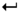

De: La Frikipedia, la enciclopedia extremadamente seria.
De: La Frikipedia, la enciclopedia extremadamente seria. De: La Frikipedia, la enciclopedia extremadamente seria.
Ehh..tú En este artículo hay prOn del bueno...Si, si...Sigue leyendo... MWHAHAHAH..ah.ah..!!
Bueno, una vez captada tu atención te contaré de que va esto. Se trata de una especie de ¿¿Portal?? si se puede decir así, donde hago SPAM pongo un poco de cada artículo relacionado con cambinaciones del teclado.
Si tienes algún artículo que encaje aquí ponle estas plantillas:
{{Infobox Teclado}}
{{Combinaciones del teclado}}
Las combinaciones de teclas te ayudan a ahorrar tiempo, dado que te permiten no tener que levantar las manos del teclado para utilizar el ratón (so perro!).
Nota:Para poder hacer uso de ellas, deberás disponer de un teclado
¡¡CUIDADO!! ¡¡ACHTUNG!! PULSA ALT+F4 PARA VER CORRECTAMENTE ESTA PAGINA!
Combinación téclica que se usa en Windows, por ejemplo. También se pude usar para acabar con tus problemas. Tiene un hermano gemelo, se odian a muerte , como el conejo y el pollo, y se llama Enter.
Si quieres saber cómo utilizar Alt+F4 y quién lo ha utilizado a lo largo de la historia buscalo en el gúguel leete esto!
Para saber como preparar pulsa aqui
Se trata de la tecla más antigua y famosa del teclado. Aunque se desconoce su localización (sé que se han visto algunas en foto, pero son montajes...) Con Any key cualquier texto podrás convertirlo a caracteres rusos, ucranianos, árabes, armenios, hebreos y de otros idiomas. Simplemente escribe el texto, selecciónalo, y pulsa Any Key
Existe desde el año de la pera, con lo cual, los primeros hombres, en vez de ir a buscar fuego, iban buscando a Any, porque en la cueva havía una pantalla azul que ponia:
To encender the fire press Any Key
Por supuesto los cavernicolas no conocian el indioma "spanglish" lo que les dificulataba encontrar "Any Key" y se desesperaban con la estupida pantalla azul.
Millones de años después, el ejército del amperio romano usaba esta tecla para definir la formación tortuga (por esto güindows va tan lento, debido a la formación tortuga).

Concepto asdfico abstracto de altísimo nivel. Su uso es habitual, aunque no único, en:
«El hechizo del fin del mundo es ctrl+alt+supr»
~ Hechizera del Warcraft III que fue clickeada muchas veces
Es la mas famosa creación de MS-Dos y Windows, es una combinación de teclas de autodestrucción de cualquier producto que haya pasado por sus manos. Si lo cambias por Alt+Ctrl+Supr, su significado bien podría ser "Alto Control Supremo".
Como la gran mayoria de las armas de destrucción masivas no nucleares, se requiere gran destreza y por lo menos dos manos para realizar una óptima pulsación de éstas. Depende de la correcta combinación de estas teclas para obtener la respuesta acertada a sus necesidades.
Si presiona las tres al mismo tiempo obtendrá la autodestrucción del software en curso. Viejas y nuevas leyendas urbanas dicen que al presionar estas teclas casi simultáneamente en un orden que casi nadie conoce puede obtener una cita holográfica directamente con Bill Gates III.
Está científicamente comprobado que el abuso del uso de esta combinación puede reducir su esperanza de vida, y la de su computadora.
El Ctrl+C Ctrl+V (Pronunciado copipega, copipaste o kopipeist en su versión HOYGAN. Del ingles, control + copy, control + paste.) es uno de los mayores inventos de la humanidad, sin el que no hubiesen podido sobrevivir estudiantes, escritores de éxito ni informáticos. Resulta la forma más rapida que existe en el mundo para copiar algo. Se entiende como copiar y pegar, y con el solo pulsar de dos teclas, se reproduce el contenido de algo que esta seleccionado.
Cuando se pulsan las teclas Ctrl y C, una microimpresora interna que tiene el ordenador imprime el texto en un papel de 1mm² y lo introduce en una zona del microprocesador llamada portapapeles. Al pulsar Ctrl y V se saca del portapapeles lo que haya y se lleva al scanner localizado en el coprocesador matemático y el texto es vuelto a poner en la pantalla, mientras una nueva copia se introduce en el portapapeles.
En realidad, el proceso es harto más complicado de lo que el apartado previo da a entender...
Es el hermano gemelo de Alt+F4 y gran compañero de juegos de Ctrl+C Ctrl+V. La tecla INTRO es la tecla más importante del teclado. Es la que nos permite enviar una orden desde este al ordenador.
También conocido como Intro o , no se lleva bien con Alt+F4 ni con Ctrl+Z, por motivos que, si quieres saberlos, deberas seguir leyendo...
Lo creó Cyberjesús, desde el futuro (en el año 3003 d.C.N), para solucionarlos múltiples problemas que tenía la gente, para traernos a todos la salvación, tan anunciada en los años 2090-3000, que decía:
Cyberjesús vendrá, y nos traerá la salvación, en forma de tecla para Güindows 2998, esta tecla se llamará Intro (en inglés Enter), esta tecla funcionará como la tan buscada Any Key, pero estará a la vista de todos (menos de Stewie Wonder), habrá 2 en un teclado y serán de un tamaño mayor al resto.
Otro de los grandes inventos de Bill Gates.Fue creado en sus momentos de reflexion en el inodoro. Esta clasificada como uno de los comandos mas usados en un ordenador,debido a que muchos idiotas como tu se equivocan al escribir,programar,etc.
Bill estaba decidido a conquistar el mundo,tenia el metodo,tenia las herramientas, pero el margen de error era pequeño.Por eso se puso a idear la manera de retroceder en el tiempo por medio de la PC,esto claro sin afectar la dimensión en la que vivimos(todos sabemos que los ordenadores poseen una dimension propia dentro).
Su nombre científico es teclado afuncional. Como su propio nombre indica es un teclado caracterizado, básicamente, por su patente ineficiencia. Es el teclado utilizado por la mayoria de especimenes humanos.
Vio la luz por primera vez en 1972, en los laboratorios de una logia Judea-masónica de aspiraciones imperialistas constituida por QWERTYUIOPASDFGHJKLÑZXCVBNM.
Familiar del famoso asdf, ademas tambien es una frase para rellenar una conversación de Mesenller. Su uso no es tan habitual como el de su envidiado familiar asdf. Pero tambien sirve para:
| |
|---|
| Alt+F4 | Any Key | Asdasd | ASDF | Bloq Despl | Ctrl+Alt+Supr | Ctrl+C Ctrl+V | Intro Ctrl+X | Ctrl+Z | Qwerty | Qweqwe | Teclado |
Autor(es):